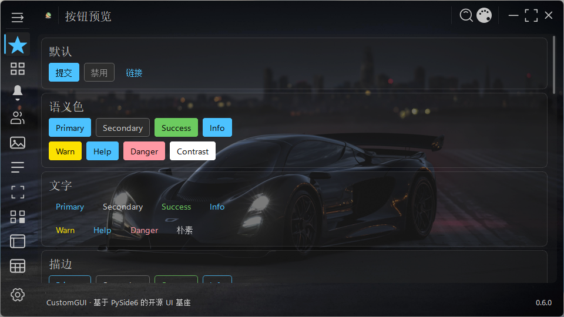

一套可运行的窗口外壳
标题栏、左菜单、四向抽屉、设置窗口、托盘与快捷键表，按真实桌面应用的结构组织，而不是零散控件的拼图。
OPEN SOURCE · PYSIDE6 DESKTOP FOUNDATION
TRAE 好应用大赏赛 · 参赛作品SllkGui 是一个基于 PySide6 的桌面 UI 基座：窗口骨架、组件库、主题与多语言、插件运行时都已就位，你只需要专心写页面和业务。
01 / 项目简介
桌面应用总要重复解决同一批问题：窗口怎么搭、菜单怎么排、主题怎么换、插件怎么装。SllkGui 把这些做成一套可运行、可扩展的基座。
阅读架构说明标题栏、左菜单、四向抽屉、设置窗口、托盘与快捷键表，按真实桌面应用的结构组织，而不是零散控件的拼图。
appcore 不依赖 PySide6，guicore 负责组件与令牌，gallery 负责插件协议与加载；包间边界由守卫测试锁定。
一个 Git 仓库就是一个插件，通过 Surface 向宿主贡献页面；路由键为 plugin_id/surface_id，可贡献多个页面。
插件在宿主进程内运行，权限声明用于知情同意，而不是沙箱。安装前请自行确认来源可信。
SllkGui 是基座，不是成品业务应用。它适合承载你自己的页面、插件与工作流。
02 / 核心能力
从窗口壳层到插件运行时，六个模块可以单独取用，也可以组合成一个完整的宿主。
标题栏、左菜单、页面栈、设置窗口与四向抽屉；托盘、快捷键、窗口材质各有独立协议，亚克力不可用时自动降级。
按钮、输入、数据表、菜单、浮层、反馈、图表与窗口部件，全部由设计令牌驱动。按文档记录，guicore 顶层导出 163 个公开名，其中 custom_ui 命名空间 105 个。
内置 Default、Bright、Dracula、Eye 四套配色，语义色、尺寸与动效参数集中管理；透明度、质感与背景图支持实时预览。
随包提供简体中文、繁體中文、English、日本語四种语言。设置只有一套界面：外观、界面、软件信息与插件配置页合并在一个设置窗口里，修改实时预览。
插件即仓库，页面即 Surface。支持来源管理、依赖检查与一键补全、按插件选择性热重载，以及统一的 Toast 反馈协议。
Windows 启动器双击即用，无需预装 Python，自动完成七步环境初始化；CLI 覆盖运行、插件源、校验、脚手架与诊断。
03 / 外观
Default、Bright、Dracula、Eye 随包提供。选择下方卡片可以切换本站配色——本站复刻其色感，产品内实际效果以下方截图为准。

主题切换后组件重绘即生效；透明度、亚克力强度与背景图在设置窗口中实时预览，放弃修改会还原到基线。
04 / 适用场景
以下是根据项目能力整理的适用方向，供你判断是否契合，不代表官方客户案例。
数据表格、分页、表单、设置、托盘与通知一应俱全。把重复的壳层工作交给基座，把时间留给业务逻辑。
你会用到：CDataTable · CFormGrid · CToast · 设置窗口一个宿主窗口承载多个独立插件，按需安装、启停、更新与回滚；插件可以各自贡献多个 Surface 页面。
你会用到：插件协议 · 源管理 · 选择性热重载用现成组件快速搭出可演示、可交付的桌面界面；gallery 模式只加载内置预览插件，不读取已安装插件，也不发起网络请求。
你会用到：sllkgui gallery · 内置 Showcase分层、令牌、插件协议都有文档与守卫测试支撑，适合定制自己的桌面基座，也适合作为 Qt 组件设计的教学案例。
你会用到：ARCHITECTURE · COMPONENTS · 测试06 / 快速开始
开发者从源码运行，普通用户直接用 Windows 启动器。两种方式共享同一套基座。
需要 Python ≥ 3.12 与 uv。
git clone https://gitee.com/shilianlvke/SllkGui.git
cd SllkGui
uv sync
uv run sllkgui gallery # 组件预览：只加载内置预览插件
uv run sllkgui run # 正式模式：加载已安装插件uv run sllkgui --help查看全部命令uv run sllkgui doctor路径与安装状态诊断uv run sllkgui source refresh --all刷新全部插件源uv run sllkgui plugin search搜索可安装插件在 Launcher/ 目录获取启动器，双击即用，无需预先安装 Python。首次运行自动完成七步初始化：
默认运行时目录在启动器旁 runtime/；不可写时回退到 %LOCALAPPDATA%\SllkGuiLauncher。启动器使用说明见仓库 Launcher/README.md。
WRITE A PLUGIN
用脚手架生成插件仓库，本地 lint 通过后，把元信息提交到官方源即可被搜索与安装。插件可贡献多个 Surface，并声明自己的设置页、快捷键与依赖。
uv run sllkgui scaffold ./my-plugin
uv run sllkgui plugin lint ./my-plugin07 / 文档与源码
文档与代码同仓维护，内容与 4.2.0 同步；若文档与代码冲突，以代码为准并提 issue。